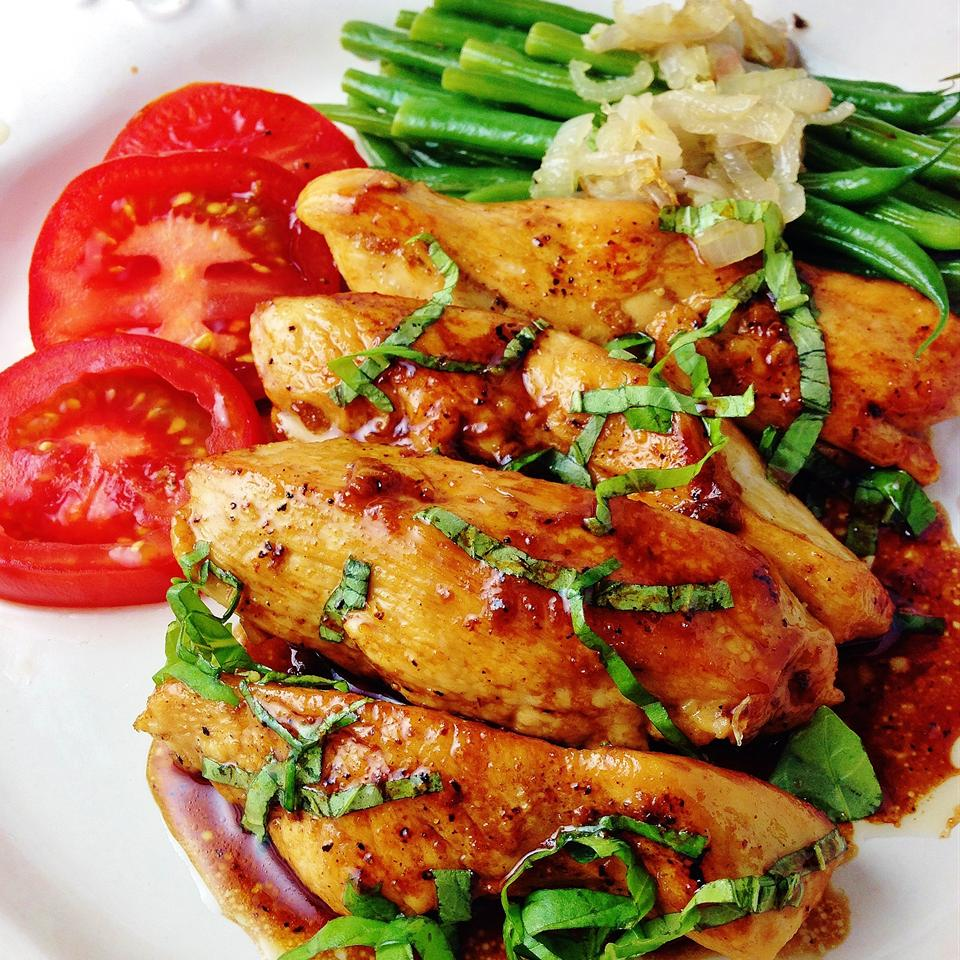

Lucky's Quickie Chickie Recipe
Lucky's Quickie Chickie Recipe

Description
Fresh basil is essential to get that fresh burst of flavor with a hint of sweet and sour in this dish. The ingredients are all on hand when my herb garden is in season! Add a salad and a favorite vegetable for a quick weeknight meal.
Ingredients
- 2 teaspoons olive oil
- 6 ounces chicken tenderloin
- 1/4 teaspoon salt
- 1/8 teaspoon freshly ground black pepper
- 2 tablespoons chopped fresh basil
- 1/2 teaspoons honey
- etc
Steps
- Heat olive oil in a nonstick skillet over medium-high heat.
- Season chicken with salt and pepper.
- Cook and stir chicken in the hot oil until chicken is no longer pink in the center, about 3 to 5 minutes.
- Stir basil, honey, and balsamic vinegar into chicken and cook for 1 more minute.